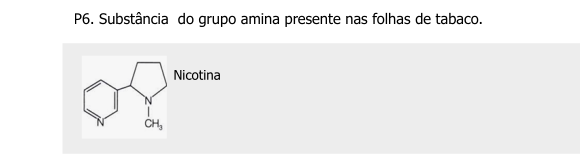

1. Separando os comandos por ";" - ex: "cpk only; color blue"
2. Separando os comandos por linhas - ex:
"cpk only
color blue"2 - Cliques de mouse versus texto de comando
Objetivos:
1. Observar que há 2 formas de conduzir ações em alguns programas: por mouse ou por comandos em texto
2. Observar as características do uso de cada
3. Conhecer alguns princípios para um “Ensino Reprodutível” e as vantagens do uso de linhas de comando ao invés de movimentos de mouse
1. Observar que há 2 formas de conduzir ações em alguns programas: por mouse ou por comandos em texto
2. Observar as características do uso de cada
3. Conhecer alguns princípios para um “Ensino Reprodutível” e as vantagens do uso de linhas de comando ao invés de movimentos de mouse
1 Cliques de mouse
Qualquer programa de computador que você já tenha usado, ou mesmo de dispositivos móveis, tem sua usabilidade centrada na facilidade do emprego de cliques e arrastes com mouse, touchpad, e mesmo os dedos (telas capacitivas). Isso facilita muito as ações rápidas pretendidas. Exemplificando para editores de texto, é comum se clicar num ícone de formatação (itálico, negrio, por ex) ou mesmo digitar seu atalho, para concluir o que se deseja no texto.
Simples, prático, e rápido. Dessa mesma forma, pode-se utilizar o Jmol, tanto na versão baixada no computador, como na versão online. Para a versão baixada basta observar a gama de ítens de menus e submenus. Já para versão de navegador, veja que não há menu !
Não obstante, a versão online permite visualizar a mesma informação, embora com outra formatação, bastando-se clicar com o botão direito do mouse em qualquer área do ecrã (nome chique pra tela contendo alguma informação, a molécula, no caso).
2 Linhas de comando
Assim como para cliques de mouse, também é possível acessar um campo de texto para digitar comandos do Jmol, tanto na versão baixada (standalone), como na versão de navegador (applet JSmol). Para a primeira, clique em File–>Console, e surgirá uma janela para inserção de texto. Na versão online, clique com o botão direito do mouse em qualquer ponto do ecrã e escolha Console.
3 Cliques de mouse versus linhas de comando
Ainda que seja possível utilizar o Jmol tanto por cliques de mouse como por comandos de texto, qual é o melhor ?
Para auxiliar na resposta, exemplifiquemos com o uso de uma planilha eletrônica, como o Excel do pacote MS-Office, ou o Calc do pacote Libreoffice, ou o Planilhas da suite Google. Suponha que você deseje fazer um gráfico simples, pegando duas colunas, cada qual para uma variável (independente ou x, e dependente, ou y). O usual seria clicar em um ítem de menu para gráficos, selecionar as colunas desejadas em campos específicos da janela que se abre, selecionar o tipo de gráfico, clicar em avançar ou algum termo similar, selecionar outras características (etiquetas ou nomes nos eixos x e y, por ex), e finalmente clicar em concluir (ou OK, ou termo de significado similar). Simples, rápido, e prático.
Mas (sempre tem um “mas”)…e se você precisasse, além de construir o gráfico, realizar ações adicionais, como obter o ajuste linear dos dados, apresentar a reta resultante com determinada cor e estilo, inserir a equação de reta em um ponto específico do gráfico, colocar um título, e alterar o símbolo dos pontos, tanto o tipo, quanto o tamanho e a cor. Ufa !!!
Sem problema, também…desde que você tenha um bom tutorial ao lado, claro ! Ou que já esteja familiarizado com o programa da planilha, menus e ações pertinentes aos vários cliques de mouse que serão necessário para se obter um belo gráfico de regressão linear ao final.
Agora…mais uma pequena variável a inserir ao exemplo levantado: suponha que não seja você a construir o gráfico, mas um aluno(a)(a) de sua disciplina, e que não fora treinado nem no uso da planilha, e nem nos cálculos pretendidos !
Perceba que agora haverá um certo desconforto, posto que:
- O aluno(a) não possui conhecimento prévio no uso da planilha;
- O aluno(a) não possui conhecimento prévio nos cálculos pretendidos;
- Você terá que treinar o aluno(a), ou oferecer-lhe um guia de treinamento correlato;
- Caso já tenha ocorrido o treinamento, mas não se tenha o guia em mãos, tanto você como aluno(a) dependerão da capacidade de retenção de memória para efetivar com sucesso a empreita.
Agora, e se as orientações para a execução do produto final estivessem, não num guia para a repetição de clique de mouse, mas sim num pequeno texto contendo tanto os comandos em sequência como os comentários explicativos de cada ação individual, e que quando inserido no programa gerasse o gráfico já todo formatado, colorido, e com o ajuste linear e os parâmetros do resultado ?
4 Vantagens do uso de linhas de comando sobre o uso de cliques de mouse
Pelo exemplo hipotético acima, perceba que um pequeno texto contendo as linhas de comando em sequência e os comentários referentes a esses permitem:
- que o produto final seja reproduzível e não contenha erros; que o produto final seja elaborado sem prévio conhecimento do aluno(a); basta executar o código no programa;
- que o produto final seja elaborado independentemente da memória dos envolvidos (sequência de cliques, por ex);
- uma quantidade virtualmente infinita de ações sequenciais, sem necessidade de se decorar a ordem dos cliques de mouse;
- o aprendizado de cada comando utilizado em linguagem humana, posto que existem comentários do autor para cada linha;
- que o produto possa ser modificado para gerar um objeto diferente ao final (alteração de cor, etiquetas de eixos, outro título, por ex)
- que se reproduza o mesmo gráfico, só que com outro conjunto de dados (x e y);
- que o aprendiz experimente outros comandos para agregar formatações e/ou cálculos distintos ao produto;
- que você ou o aluno(a) consigam reproduzir o produto sem recorrer à memória e até por séculos depois, se as previsões de extinção em massa não vingarem;
- que qualquer pessoa consiga reproduzir o objeto, independentemente de seu grau de instrução técnica ou de operabilidade do programa;
- enfim, que se consiga ensinar determinado conteúdo de modo reprodutível…ou…Ensino Reprodutível.
Dessa forma, pretende-se nesse curso utilizar somente linhas de comando, para que se permita materializar-se as vantagens descritas acima, tangentes a uma metodologia ativa voltada, ainda que incipiente, ao Ensino Reprodutível, e tanto para a ferramenta Jmol, como para a ferramenta R & RStudio.
Em relação ao Jmol, portanto, as ações sequenciais para visualização tridimensional de modelos moleculares será realizada pelo Console acessável conforme ítem Seção 2 acima.
5 Scripts
Colocado da forma acima, quando se tem um conjunto qualquer de linhas de comando sequenciais, permitindo atuar sobre um objeto tal como um modelo molecular, e para uma infinidade de coisas, tem-se então um script. Tecnicamente falando, um script constitui um bloco de instruções sequenciais em texto para compilação em um programa.
Scripts podem ser elaborados no Jmol em browser por duas maneiras:
Se você deseja que o modelo realize uns poucos comandos, a melhor opção é separá-los por ponto e vírgula (“;”). Mas se desejar algo mais “sofisticado”, sugere-se separá-los por linhas. E mais…linhas comentadas e escritas em um bloco de notas ou em qualquer editor de texto !
5.1 Vantagens do uso de bloco de notas ou editor de texto para comandos em série
Imaginando-se uma tranformação mais significativa à molécula original carregada, como efeitos de ampliação, coloração, e representação e movimento, é fácil perceber que um conjunto de linhas comentadas dispostas em sequência facilita tanto a observação do que se pretende com o modelo, como a identificação de erros e ajustes.
Isto também é herdado dos conceitos de Ensino Reprodutível, uma vez que facilita a visualização do código (human readable format) e sua depuração (code debug). Veja o exemplo que segue, reflita sobre sua interpretação, copie para um bloco de notas, e teste-o no Console do Jmol.

load $nicotine
background black # cor preta do plano de fundo
spin 80 # gira a molécula
delay 3 # aguarda 1 segundo
spin off # interrompe a rotação
cpk # renderiza como modelo de preenchimentoAgora é com você:
- Copie o trecho de código acima para um bloco de notas.
- Altere as linhas de código de forma aleatória, copie e execute novamente no Console.
- Sugestões para alteração (uma ou outra…ou todas!):
spin 300
delay 1
background magenta